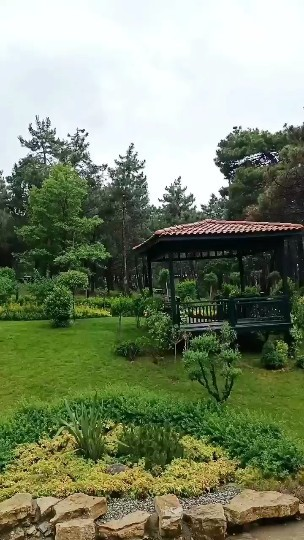

|  |
Örümcek-Adam Eve Dönüş Yok
Örümcek-Adam Eve Dönüş Yok, kimliği açığa Örümcek-Adam'ın, sırrını geri vermesi için Doktor Strange'den yardım istemesiyle birlikte yaşananları konu ediyor. |
|
Aslan: Hürkuş Kayıp Elmas
Aslan: Hürkuş Kayıp Elmas, büyük büyük babasının eski uçağının peşine düşen küçük bir çocuğun hikayesini konu ediyor. |
|
Matrix Resurrections
Matrix Resurrections”la çifte gerçeklik dünyasına geri dönülüyor. Bay Anderson yeniden beyaz tavşanı izlemeyi seçmek zorunda kalır. Çünkü Anderson gerçekliğinin fiziksel mi yoksa zihinsel bir kurgu mu olduğunu anlayıp, kendisini gerçekten tanımak istemektedir. |